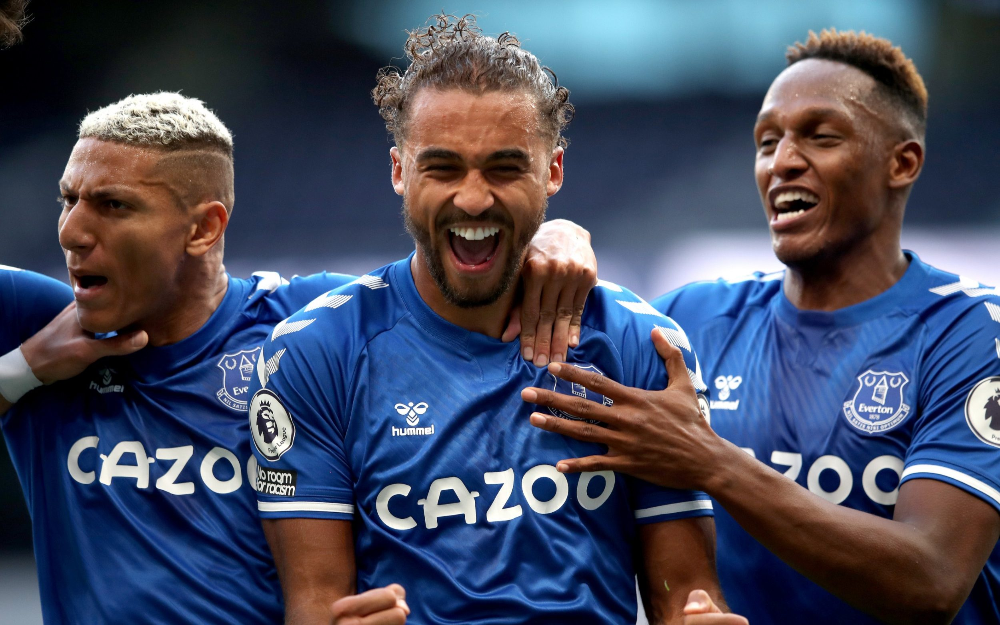
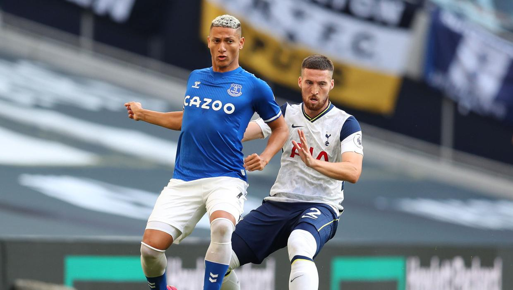

-
New Look Everton Dominate Lackluster Spurs
by Ilyas Adnane - September 13, 2020
isoadn@umich.edu

Final Score: Spurs 0-1 Everton
In what is probably the most anticipated match of the weekend, Carlo Ancelotti and Everton outclassed Jose Mourinho’s Tottenham 1-0, marking Everton’s first victory against Tottenham since 2012 (15 games) and their first win against a Big 6 side since 2013 (40 games). Here are five key takeaways:
1. Richarlison and Calvert-Lewin Partnership Is What Drives Everton
Last season, Richarlison and Dominic Calvert-Lewin provided 26 out of Everton’s 44 goals last season, leading the squad in this area. That trend has continued this year. Richarlison consistently exposed the right side of the Spurs defense, finding himself in open space with the option of either cutting inside, delivering a cross, or sliding the ball to Lucas Digne to make a run into a better position. He dominated the ball with 79 touches, second-most on the team, had ten successful dribbles, and was a huge asset in the final third, taking seven shots with one on target. Calvert-Lewin was quiet for the first half, but in the second, he came alive. He had two shots on target, including a headed goal off of a Digne cross in the 55th minute that nestled into the top right corner of the net. If Everton wants to contend for a Europa League spot this season, and bounce back from their worst run in 16 years, these two forwards are going to be the driving force behind that.

2. Everton’s Defense Looks Improved
Last year, Everton gave up 56 goals, including a whopping 15 on set pieces. Jordan Pickford had 9 clean sheets, good for 10th in the league, and only Chelsea’s Kepa saved a fewer percentage of shots out of players with at least 40 saves. Against Spurs, he covered nearly every inch of the net. He had five saves, including saves in crucial moments against Dele Alli on a counter-attack and Matt Doherty taking a shot 4 meters away from goal. Digne provided a good amount of offensive support, with an assist coming off of a free kick on the left side and playing well with Richarlison on Spurs’ weakest side. Seamus Coleman kept Heung-Min Son relatively quiet, not allowing him to get many shots off in the location he wanted to shoot from. Yerry Mina and Michael Keane dominated Harry Kane and only allowed a quarter of Tottenham’s crosses to reach their target. On free kicks and corners, Everton, while applying some unusual techniques, did not allow a completed cross in those situations. Everton’s defense looks much improved to begin the year. That will need to hold against bigger clubs in order for Everton to have success this year.
3. Big Money Signings Assist Everton…
No players this week had as much pressure on them as James Rodriguez, Allan, and Abdoulaye Doucoure. Ancellotti brought them in from Real Madrid, Napoli, and Watford in an attempt to craft a midfield to his standard, and today, that is exactly what he got. James provided great offensive support on the opposite side from Richarlison, leading the team in key passes with 5, providing 11 accurate long balls, and having a couple of efforts on goal, including a curler in the 35th minute inches away from the net, and a shot from the penalty spot that was pulled wide in the 50th minute. Doucoure joined Rodriguez in attack at times, providing four key passes and feeding the ball well into Richarlison, Digne, and Rodriguez in attack. The real contribution of this group came on the defensive side of the ball. Allan and Doucoure made several great tackles in Everton’s third, and the trio made 9 interceptions as part of Everton’s high pressing defense, a huge reason for their constant pressure on offense. If this trio can remain the engine of their defense and link play between the backline and their forwards, Everton will be fun to watch this year.
4. …But Do Little For Spurs
Matt Doherty and Pierre-Emille Hojbjerg were brought in this summer from Wolves and Southampton as upgrades at both right-back and midfield, hoping to provide better play from both of those positions. That wasn’t the case. Doherty provided a good amount on offense for Spurs, receiving a large number of the touches and providing a lot of passes before he was subbed off in the 75th minute. However, his offensive contribution meant that he was playing very high most of the time, which forced the rest of the Spurs back four and their defensive midfield to make adjustments to cover the area right behind him. Once Richarlison and Digne started to play behind Doherty, Everton overloaded that right side, having 42% of their possession on that side of the pitch, which led to their goal and Doherty being subbed off. His debut was miles ahead of Hojbjerg, however. Offensively, Hojbjerg provided zero link-up play between the backline and the Spurs attack, which led to a very quiet night for both Harry Kane and Dele Alli. Defensively, he had as many tackles as he had fouls, and finished with a yellow card. Tottenham still need to sort their midfield and how they utilize their fullbacks in attack and defense, and Doherty and Hojbjerg are going to need to improve on their performance if that problem is going to be solved.

5. 2020 Looks A Lot Like 2019 For Spurs
Mauricio Pochettino led Spurs to their greatest five year run in a long time, culminating in a 2-0 loss in the Champions League final to Liverpool. Since that point, Spurs have looked slow offensively, lackluster defensively, and their desire to win and play football at a high level was questioned. Mourinho succeeded Pochettino in November 2019, hoping to correct many of the problems plaguing Spurs. Whatever he’s done hasn’t worked so far. Outside of the 10 minutes before halftime, Spurs were a mess. The only offense came from Son and Doherty attempting to run past Everton’s fullbacks and cross the ball into Harry Kane or tuck inside and get a shot on goal. Lucas Moura provided a couple of big interceptions that lead to great counterattacking opportunities, but Jordan Pickford had quality saves every time. On defense, Spurs were compact to begin the match, but as the game progressed, it appeared that they were much more comfortable not challenging Everton for the ball, allowing crosses and shots in and around the box. This continued even after Everton took the lead. If Spurs want to get back to being a member of the elite in English football, Jose is going to need to sort out all of their issues in a short amount of time.